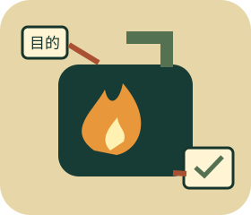

TOKEN VALUE / NO EMPTY BURNING
燃燒Token
大挑戰
不是一味省，也不是一直燒。
讓每一次追問、每一份資料都有目的。

同一任務，換一種使用習慣
12個情境、四種操作：選媒介、補資訊、組回覆、跑驗收。先看任務是否完成，再看投入是否合理；必要的追問、細節、圖片與時間資訊都有價值。
資料、回覆與驗收都是預寫模擬；不呼叫AI、不上傳媒體，不永久儲存作答與筆記。
Token、媒介成本與隱私說明
Token不是固定一個字一個，實際處理與費用依模型、輸入／輸出、解析度、影片取樣等規則不同。頁內字元數也不是Token計數。
影像與時間軸皆為自製示意，沒有隱藏上傳；回覆不冒充真實模型執行。重新整理清空本輪，只有你按下載才產生本機回條。
本次策略已用0 格
本關合理範圍
任務結果尚未驗收
以上全是本頁虛構燃料格，不是Token數。重演會重新計算單次策略；所有探索累計另列，不把過去投入當作消失。
對照原地燃燒路線（預寫示範）與自己的策略
本輪使用習慣回顧
只選一項，帶到下一次真實任務
不宣稱遊戲通關已改變真實習慣；下次任務仍要自己實作與驗收。筆記只留本頁，下載時才放入你的本機回條。
五個帶走原則
- 先說目標與可觀察的驗收結果，不靠反覆催促補出缺少資訊。
- 媒介配任務：可複製文字、位置圖、事件序列各有用途，截取相關範圍。
- 先約定回覆深度與格式，不重述問題三遍；也不省掉關鍵限制。
- 有新證據或修改就合理重問、重測；同版同條件沒新目的時收尾。
- 品質、風險與成本一起看，低消耗不等於有效，高消耗也不等於有價值。
查核日2026-11-14。概念參考：Hugging Face分詞演算法、多模態與影片取樣說明、MDN除錯教學。成本模型與任務皆為本頁原創示範，不提供供應商價格比較。